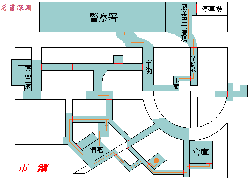
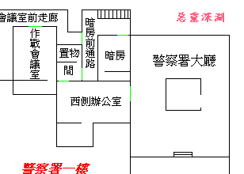
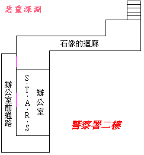
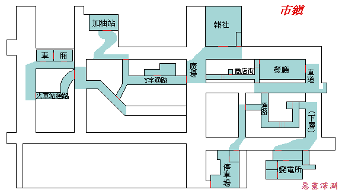

|
惡靈古堡３-----地圖攻略─倉庫∼啟動火車
|
以下的攻略可以取得所有的File，標綠色的道具是重要道具，一定要取。有些道具
是隨機出現的，有些則是Heavy或Easy模式才有的，某些地圖（如下）有藍綠色的標記
，表示藍綠色的部分才可以走，其他部分都被雜物阻擋無法通過，橘色線條表示路線。

|
遊戲開始的位置在倉庫，與 Darioart 對話完後從樓梯上去管理室，一進門看到門邊閃閃發亮的就是倉庫 鑰匙，櫃子上有２罐彈藥粉Ａ，打字機旁有色帶，取完後下樓在角落的門使用倉庫鑰匙後出倉庫。 通過一條小巷子，出來馬上可以看到左手邊有個門，至於右手邊那條路底端的兩個門一個鎖住了，另 一個門只是繞遠路，不如直接從一開始的門進去。 來到一條岔路，請注意地圖上標示橘點的地方，玩家要接近那扇門，門會突然打開，如果沒有打開請 調查一下吧！裡面衝出一堆殭屍，解決後進入，在裡面的找到打火機油，屍體上面找到散彈槍。照地 圖路線前進，途中有綠色藥草 × ２。 來到酒吧的門口（鎖住），隔壁是服飾店，如果已經破關一次以上，取得服飾店鑰匙才能進去（鑰匙 存放在置物箱），轉角有２個鐵箱可以爬上去，牆上有地圖，樓梯上去有綠色藥草 × ２，下來解決幾 隻殭屍繼續前進。 玩家經過酒吧後門時聽到幾聲槍聲，若趕緊下到較低的平台（附近有色帶）可以看到 Brad 跑進酒吧避 難了，跟隨他的腳步進入酒吧，發現他正與一隻殭屍糾纏，幫不幫他都可以，他自己會解決，面前的 桌上有時鐘塔的名信片，收銀臺有手槍子彈，待他解決那隻殭屍會有對話，結束後在另一扇門附近發 現打火機，和之前的打火機油組合。 繼續依照地圖上的路線前進，經過一處街道，有許多殭屍在玩家接近門時會一湧而出，利用油桶解決 ，巷底有照片Ａ、紅色藥草，在門口使用打火機後即可進出。經過市街進入警察署，一進去就發生 事 件，追跡者首次出場，殺死了 Brad，此時出現了選擇： （1.與追跡者對決 2.逃入警察署 time over.與追跡者對決） 如果選擇對決，無論有沒有勝利都可以趁機從 Brad的屍體上取得 Brad的皮夾，調查後得到 S.T.A.R.S卡 片，只要一進入警署，就可以擺脫追跡者。 （選擇逃入警署的以後才可拿到S.T.A.R.S.卡片） |
|
 |
|
進入大門右手邊有綠色藥草 × ３，中央櫃檯上有手槍子彈，打字機隔壁桌上有地圖，在電腦前面使用 S.T.A.R.S卡片可以得到一組密碼 ( 0131 or 0513 or 4011 or 4312 )，如果還沒有取得卡片也沒關係，先進入 西側辦公室，裡側隔間裡的屍體上有Marvin的報告書，桌上有散彈。接著到置物間，閃著紅燈的櫃子 有藍寶石，繞到後排的櫃子，有一個同樣閃著光的櫃子，輸入之前的密碼後得到紋章之鑰。還沒有密 碼的玩家必須經暗房前通路、會議室前走廊（底部有紅色藥草 × ２）到作戰會議室，在講台旁的桌上 拿到Jill的S.T.A.R.S卡片，門口附近的桌上有色帶，裡面房間的壁爐上可能有散彈（隨機），得到卡片 回大廳看密碼，再去取得紋章之鑰。上２樓前先到暗房，打字機旁有色帶，對面桌上有David的手記， 角落鐵櫃裡有彈藥粉Ａ。 |

|
上２樓後經石像的迴廊、辦公室前通路（底端有紅色藥草×２）進入S.T.A.R.S辦公室，在桌上閃閃發光 的是鐵絲，進門左側傳真機上有來自Kendo武器店的傳真，裡側桌上有手槍子彈，鐵櫃裡有榴彈槍or左 輪手槍，標有紅色十字的急救包可拿到急救噴霧，出門的時候收到來自Carlos的訊息。 得到鐵絲這個重要物品之後離開警察署，經過1F暗房前通路時追跡者持火箭筒出現，可以不用理他迅 速逃跑，一樓置物室有一格可以用鐵絲打開，有彈藥粉Ｂ。 出了警署來到市街上，用鐵絲打開小巷的門，小巷的角落傭兵屍體上有手槍子彈，接著拿到傭兵的日 記。 消防巷有綠色藥草×３、藍色藥草×２，廢棄巴士廣場的巴士後頭屍體附近櫃子上有彈藥粉Ｂ，停車場 調查冒出火花的車輛得電線。 |

|
停車場的置物間有手槍子彈、色帶，然後沿路到通路，牆上有地圖，還會遇上陰溝惡魔，躺在中間的 僵屍屍體上有彈藥粉A。出了通路可以選擇先去餐廳or先去報社，多少會影響劇情流程（如果想得到Jill 的日記就必須先去餐廳）。 §先去餐廳：有兩條可以去餐廳（無影響），需要帶鐵絲，餐廳桌上有本市指南，用鐵絲將餐廳近門的 鐵櫃打開得鐵鍬，用鐵鍬打開通往下水道的蓋子，發生劇情，遇Carlos和追跡者： （1.逃入下水道 2.躲藏 time over.與追跡者對決 如果選擇１則要迅速由下水道的排水孔爬出去，否則持續上漲的水會逼得玩家重新上去面 對追跡者。 如果選擇２Jill會炸昏追跡者，可拿到他身上的獎品（Heavy模式），但是追跡者還會再醒 來 ，如果本來就打算要把追跡者解決的玩家請在餐廳內解決，因為還有Carlos幫忙。 餐廳結束後去報社，1F櫃檯有急救噴霧，推梯子到公用電話旁販賣機前面，爬上去打開開 關，公用電話上有照片Ｂ，把鐵捲門前開關打開，經此樓梯到３樓，辦公室桌上有綠寶石 ，另一張桌上有照片Ｃ，接著 在進門左手最裡側可拿到新聞記者的筆記。 §先去報社：1F櫃檯有急救噴霧，推梯子到公用電話旁販賣機前面，爬上去打開開關，公用電話上有 照片Ｂ，把鐵捲門前開關打開，經此樓梯到３樓，發生劇情，遇Carlos和追跡者： （1.跳出窗外 2.躲藏 time over.與追跡者對決） 如果選１會從報社旁的小門出來，不過若是要取File還是要回去，而追跡者也還在。報社 桌上有照片Ｃ，接著在進門左手最裡側可拿到新聞記者的筆記。 如果選２Jill會炸昏追跡者，可拿到他身上的獎品（Heavy模式），但是追跡者會再醒來， 如果本來就打算要把追跡者解決的玩家請在報社內解決，因為還有Carlos幫忙。 報社結束後去餐廳，需要帶鐵絲，餐廳桌上有本市指南，用鐵絲將餐廳近門的鐵櫃打開得 鐵鍬，用鐵鍬打開通往下水道的蓋子，下水道盡頭屍體上有綠寶石。 取得綠寶石後，回到商店街的置物間，拿取六角把手，再把之前在警署得到的藍寶石取出，回到廣場 機關上使用藍、綠寶石打開大門，門口屍體上有手槍子彈。 經Ｙ字通路往火車站前通路，火車站前通路上有綠色藥草×２∼４，繼續往火車前進，通往火車的門門 口屍體上有散彈，上火車後發生劇情，遇見Nicholaic和Mikhail，此節車廂有電車技工的備忘錄，進入下 一節車廂，得到 Carlos 送的腰包（身上置物的空間增加兩格），座椅上有扳手。 得到扳手後，帶著六角把手到加油站，加油站門口有紅色藥草，在門邊的圓孔使用六角把手，接著使 用扳手即可進入，裡面的桌上隨機出現彈藥粉，靠近櫃檯後方會發生劇情，進來的人因為之前報社和 餐廳的分歧而不同，可能是 Carlos 或Nicholaic，櫃檯後方有急救噴霧，旁邊的開關連續調對三次後得到 機油，要出門時加油站發生大爆炸，再也不能進去了。 回到Ｙ字通路，一旁的門突然打開跑出一堆殭屍，裡面有綠色藥草×３，調查石像得到石書。 在餐廳前的車道處角落有綠色藥草×２，附近有機關，將石書嵌入預留的同狀形空位，再取下隔壁的圓 形石板，回到石像處放上圓形石板按下開關，再次 調查得到蓄電池。 將電池使用在通路的升降梯，乘坐升降梯到下層的變電所，變電所前門有紅色藥草×２，裡面桌上隨機 出現彈藥粉，按下電源開關，然後到旁邊去調電力，這裡的２間房間需要不同的電力： 高電壓門：115V∼125V 青赤青赤，房內有左輪手槍 or 榴彈槍。 低電壓門： 15V∼ 25V 赤青青青，房內有電管。 注意，無論先進入哪一扇門出來都會遇上分歧，有一大群殭屍將闖入： （1.使用電流 2.從緊急逃生口逃出 time over.殭屍闖入） 第一個選項會將所有殭屍電死在門外，對玩家沒影響；第二個選項逃出時會碰上持有火箭筒的追跡者 ，而且如果事先進了高電壓門，還是需要再回去一次取得電管；第三個選項只是多出一堆敵人罷了。 接著回到上一張地圖的市鎮，在消防巷底使用扳手得到消防水管，到藥品工廠前大火燃燒的地方，牆 上有送水口，接上消防水管即可滅火進入。 小巷有藍色藥草，藥品工廠門口有四角把手（非重要道具），進入藥品工廠發生劇情，遇 Carlos 或 Nicholaic（與加油站遇的人不同），還有一個 U.B.C.S 部隊的夥伴，調查桌上閃閃發亮處，有管理責任 者的報告 書，再調查一次可用遙控器打開電視，注意電視上的藥品名稱（隨機），再將藥品名稱輸入 隔壁桌電腦裡以打開管制門，方才發生劇情附近的文件櫃裡有營業所的傳真和急救噴霧。 進入管制門，裡頭櫃子上有添加劑和彈藥粉（隨機），離開時需要解決一堆殭屍。 將添加劑和機油結合，現在已經足以啟動火車了，可是想拿到所有 File 的玩家必須往回走，回到遊戲 開始的倉庫，途中經過酒吧後門，在那有一扇鐵捲門，使用四角把手打開，得到榴彈×３袋；回到倉庫 時 Darioart已經被殭屍分食，爬上他躲藏的貨櫃，拿到彈藥粉、貨櫃中的遺言。 拿著調和機油、電線、電管前往火車，經過停車場時遇上箱子掉落的事件，產生分歧： （1.向上爬升 2.往下落降 time over.被箱子擊中受傷後落降） 選擇１的回到地面繼續遊戲，往下的則是通過一下水道後由停車場外的廢棄巴士廣場上來，重新走一 次即可。（在Ｙ字通路因分歧不同可能會遇上追跡者）接著又在火車站前通路時遇上大震，掉落下水 道，此處要和墓地巨蟲決鬥，他只有在玩家接近洞口時才會現身，解決後打開２個開關放下梯子，通 往火車車廂前，進入車廂使用三種道具， Carlos 出現，得到火炎彈，２人一齊啟動電車。 ───時鐘塔∼結局 |
惡靈深淵Biohazard Abyss http://98.to/coolbio